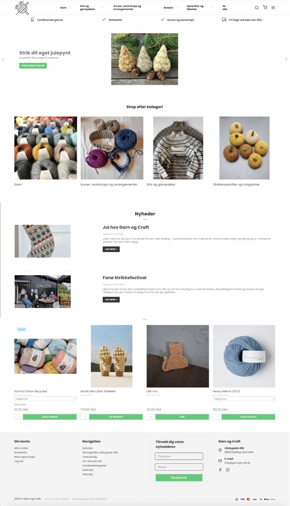
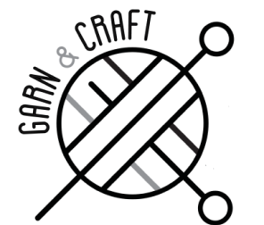
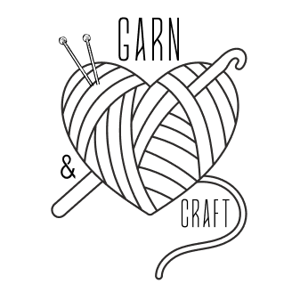
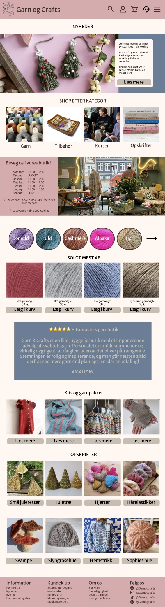

Case study 02
Garn & Craft
A digital and visual concept redesign for a Kolding-based yarn and craft store, moving from yarn boutique to creative community.
Overview
Garn & Craft is a physical yarn and craft store in Kolding with an existing webshop, specializing in certified quality yarn, tools, and in-store workshops. The project set out to redesign its digital presence and visual identity so the brand could reach a wider audience — particularly younger, digitally native crafters — without losing the loyal, older customer base that has supported the shop for years.
The result is a refreshed brand system and a mobile-first website that repositions Garn & Craft as a creative community, not just a yarn retailer.
Tools used:
Colors
- Sand
#FFF8F2 - Cacao
#40312E - Rain blue
#6C7E95 - Olive green
#849060 - Dusty rose
#D5ACAD
Typography
- Merriweather Sans
H1, H2, H3 - Roboto
Body text




Scroll inside the window to see the whole page.